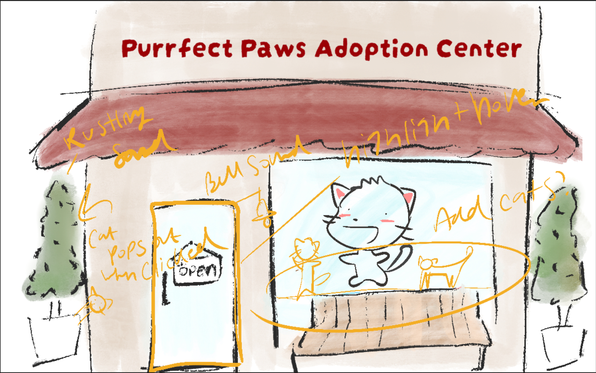

Rheina is the Teaching Assistant for DES157A Interactive Media II.
Annabelle is a Project Mentor for Design Interactive at UC Davis.
The feedback provided by Rheiana and Annabelle had many overlapping points. The overall consensus is that the design is a great improvement from the original and next steps to honing in on the gamification would be to add animation. Annabelle suggested displaying the cats in the window and Rheiana suggested showing the cats inside, as well as proposing to integrate microinteractions, such as making cats move around, to enhance the game-like experience. Additionally, I have yet to settle on an art style so that will need to be done to continue forward. I think incorporation of animation will elevate this project to the next level. In terms of style I want it to feel fun and playful.
I definitely want to incorporation more animations, such as hovering over items and having something happen. Some of my favorite games have easter eggs that you find as you click around thorugh items so I want to emulate that, especially those online web games from decades ago. The more things you can interact with make things feel more full and complete. I also want to add sound, like background music, opening door sounds, and meowing. I feel like sound makes the biggest difference to immesrsion and is a simple but powerful way to spark delight in users.
